Improve the final image, or use the tools separately
In short: Enhancements improve the final image after processing. Standalone tools run parts of AutoIntegrate as separate scripts from the Script / AutoIntegrate menu.
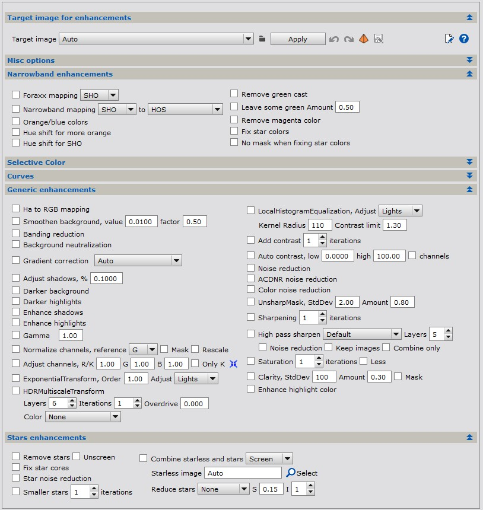
Image enhancements allow running several PixInsight processes and enhancements separately on an image. Image enhancements can be found in the Enhancements tab.
Enhancements can be run as part of the basic image workflow or it can be run separately on selected images. When enhancements are run separately on a selected image it is easy to experiment the effect of different processing in a preview window with undo and redo buttons.
Some of the enhancements that can be applied to the image include:
If multiple options are selected see tooltips on the script for execution order.
To use AutoIntegrate enhancements tools without the full AutoIntegrate script there is a standalone script Image Enhancements in the Script / AutoIntegrate menu.
In case of Run or AutoContinue, Image enhancements steps are applied to a copy of the final image. A new image is created with _enh added to the name. For example if the final image is AutoLRGB then a new image AutoLRGB_enh is created. AutoContinue can be used to apply enhancements after the final image is created.
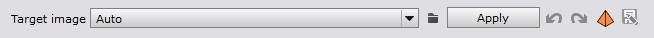
From a drop down list it is possible to select an image into which enhancements are applied. With the Apply button enhancements are by default run on a copy of the image. There is also a simple undo and redo mechanism to iterate with different enhancements options.
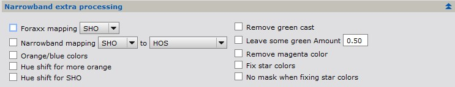
There are also narrowband specific enhancements options in the Enhancements / Narrowband enhancements section. Below are some options.
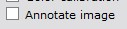
Annotate images enhancements can be used to add annotations to the final image. When used with the Run or AutoContinue button a new image with _Annotated postfix is created. Annotate image uses PixInsight AnnotateImage script.
Note that the image must have a correct astrometric solution embedded for annotation to work. When using SPCC color calibration the astrometric solution is automatically embedded.
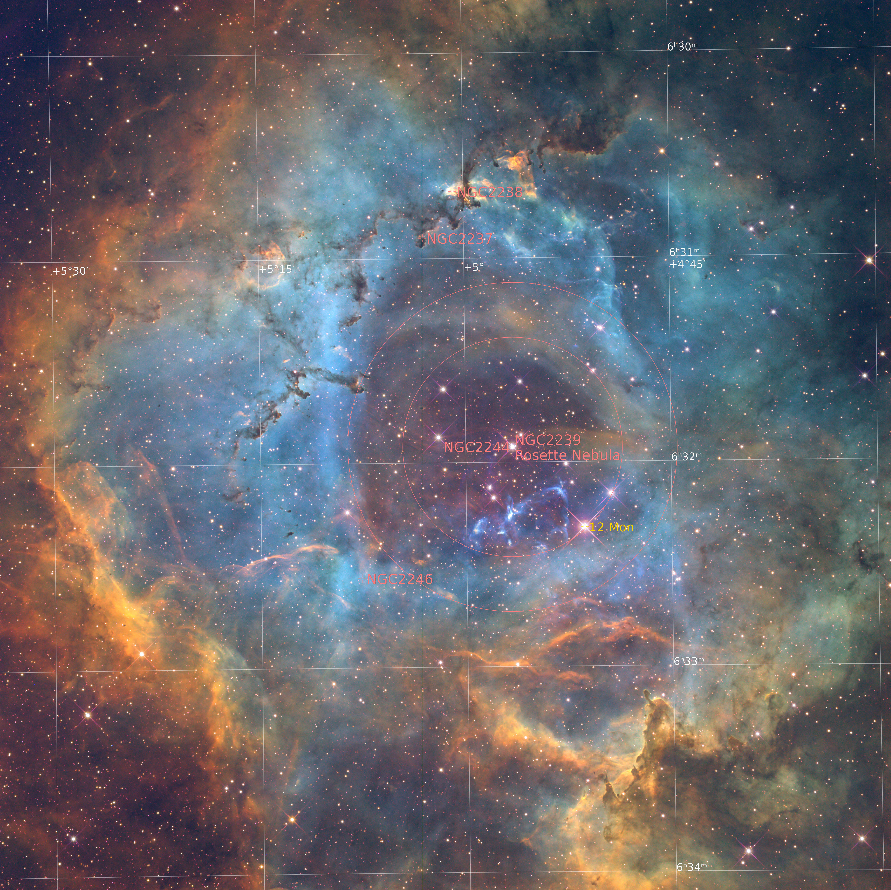
Annotated image.
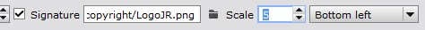
Signature enhancements option is used to add signature to the final image. The signature image file must be given by the user. The signature file can be for example a .png image with a transparent background. Note that no borders are added to the image.
Optionally the signature image can be scaled relative to the main image. The scaling is given as a percentage of the main image size. The signature position can also be chosen: 'Top left', 'Top middle', 'Top right', 'Bottom left', 'Bottom middle' or 'Bottom right'.
Standalone tools are scripts that are derived from the larger AutoIntegrate suite. They can be used independently of the main AutoIntegrate script for specific tasks.
Standalone image stretching script allows applying different stretching methods to images.
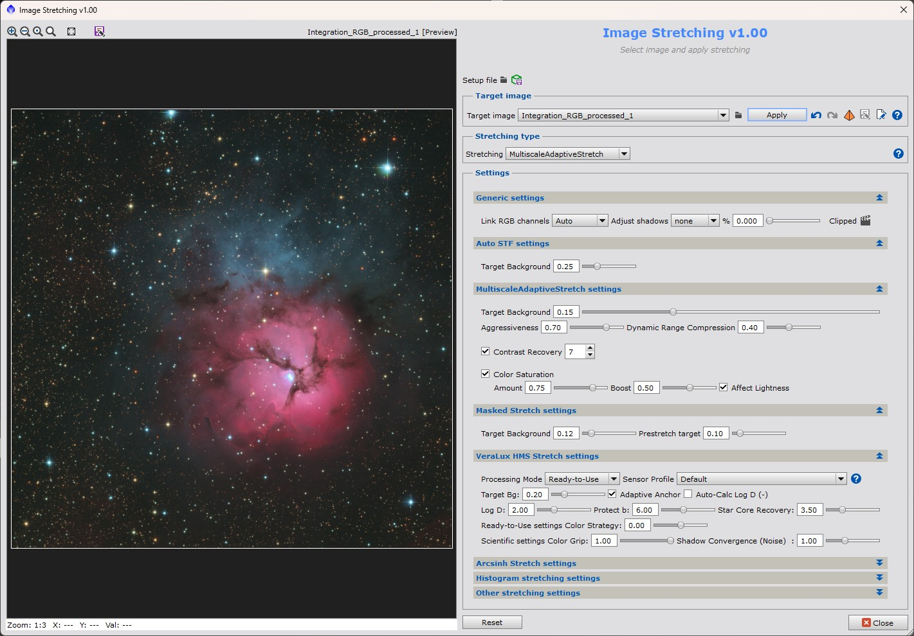
Standalone gradient correction script allows applying different gradient correction methods to images.
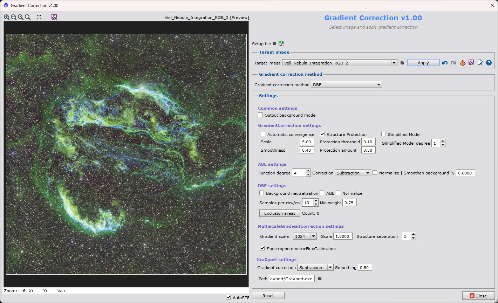
Standalone narrowband combinations script allows combining narrowband images to RGB images using different color palettes.
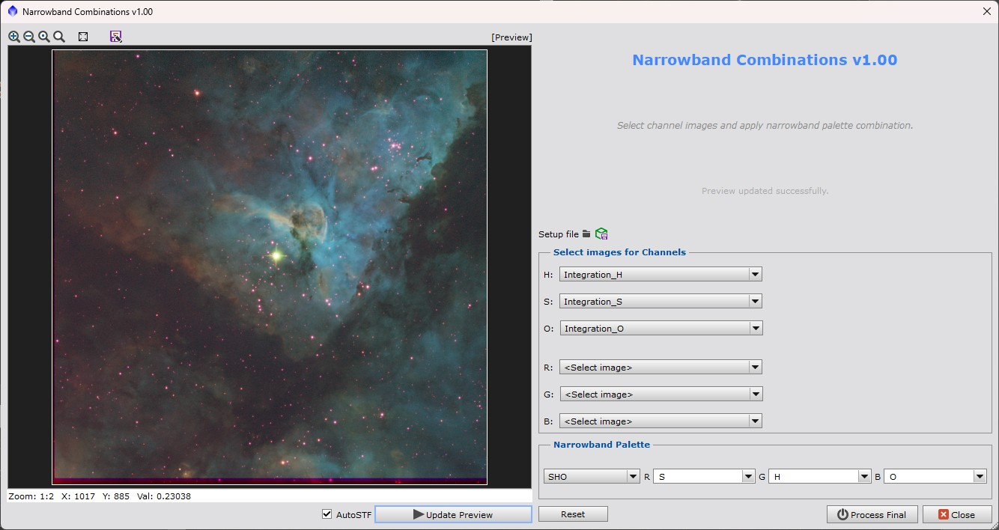
Standalone image enhancements script allows applying different image enhancements to images.
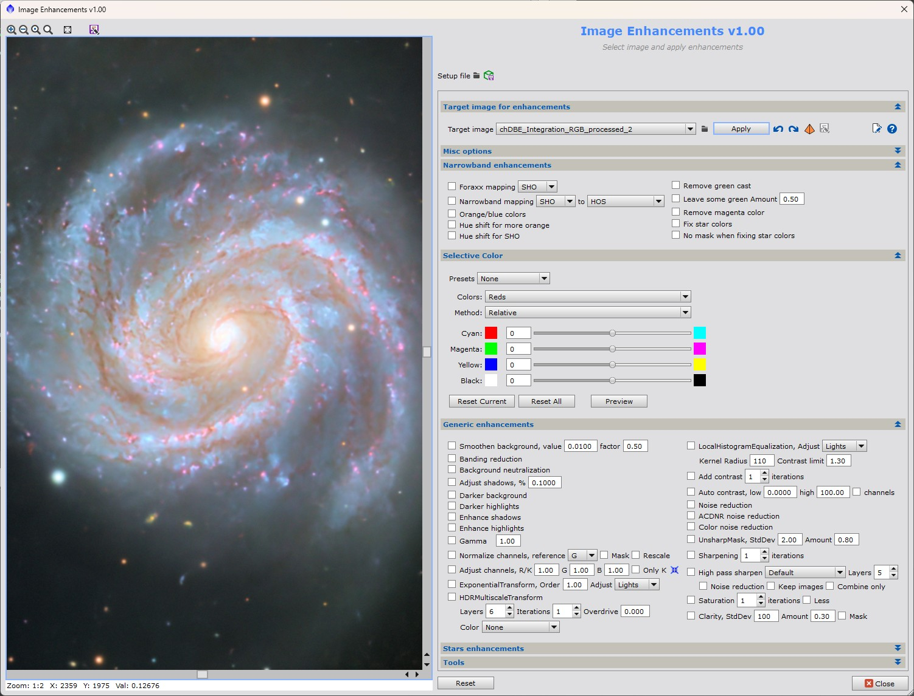
Standalone selective color script allows applying selective color adjustments to images.
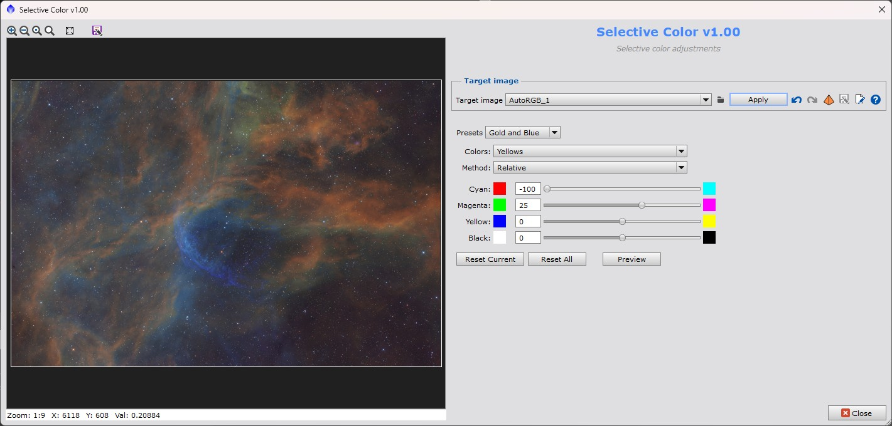